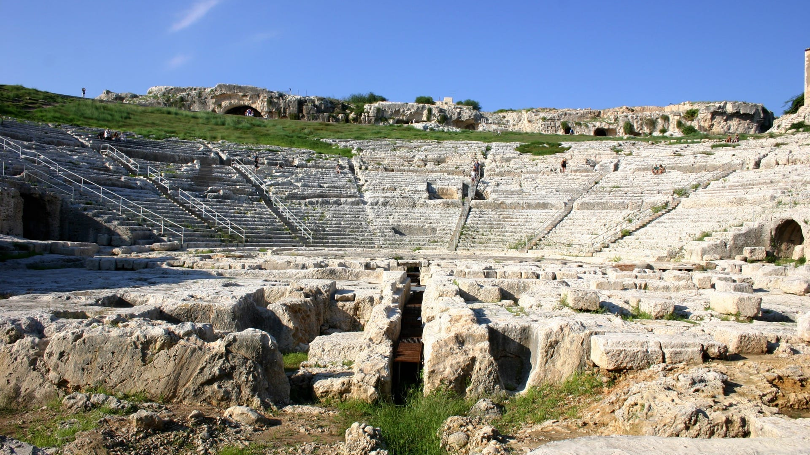

PARCO DELLA NEAPOLIS
Il cuore della Magna Grecia
Custodisce alcuni dei monumenti più straordinari dell'antichità, tra cui l'imponente Teatro Greco, ancora oggi suggestivo palcoscenico per le rappresentazioni classiche, l'Anfiteatro Romano e il misterioso e affascinante Orecchio di Dionisio.